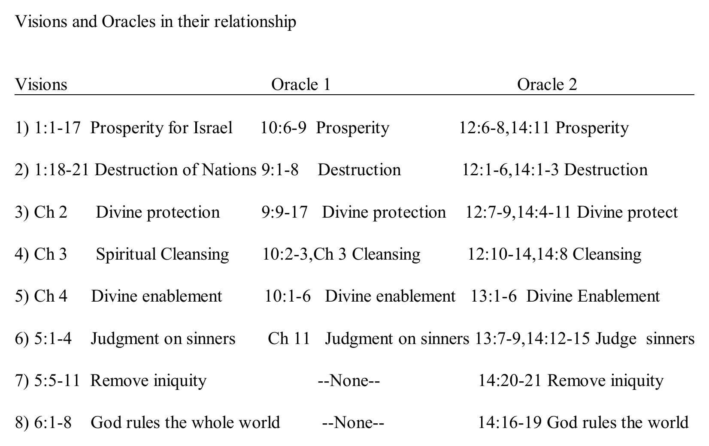

Zechariah
Read each chapter first, then work through Jim’s questions for that chapter. His wording is unchanged, including punctuation and typographical quirks.
Zechariah Outline
Outline of Zechariah
I. The Eight Symbolic Visions (chaps. 1-6)
A. The introduction to the visions (1:1-6)
1. Preface to the call to repentance (1:1)
2. Particulars of the call to repentance (1:2-6)
B. The communication of the visions (1:7-6:8)
1. The vision of the red-horse rider among the myrtles (1:7-17) 2. The vision of the four horns and the four craftsmen (1:18-21) 3. The vision of the surveyor with the measuring line (chap. 2) 4. The vision of the cleansing and crowning of Joshua (chap. 3) 5. The vision of the gold lampstand and the two olive trees (chap. 4) 6. The vision of the flying scroll (5:1-4)
7. The vision of the woman in the ephah (5:5-11)
8. The vision of the four chariots (6:1-8)
C. The symbolic act concluding the vision (6:9-15)
1. The symbolic crowning (6:9-11)
2. The prophetic message (6:12-13)
3. The visible memorial (6:14)
4. The universal significance (6:15)
II. The Four Explanatory Messages (chaps. 7-8)
A. The messages required by the question about fasting (7:1-3)
B. The messages declared as the answer from the Lord (7:4-8:23)
1. A message of rebuke (7:4-7)
2. A message of repentance (7:8-14)
3. A message of restoration (8:1-17)
4. A message of rejoicing (8:18-23)
III. Two Revelatory Oracles (chaps. 9-14)
A. The anointed King rejected (chaps. 9-11)
1. The intervening judgments on nations surrounding Israel (9:1-8) 2. The blessings of the Messiah (9:9-10:12)
3. The rejection of the Good Shepherd and its consequences for Israel (chap. 11) B. The rejected King enthroned (chaps. 12-14)
1. The redemption of Israel (chaps. 12-13)
2. The return of the King (chap. 14)
The Bible Knowledge Commentary: An Exposition of the Scriptures by Dallas Seminary Faculty.
Zechariah Introduction
Zechariah
F. Duane Lindsey, A.B., B.D., Th.M., Th.D.
Introduction
Contents:
Zechariah the Prophet.
The Historical Background of Zechariah.
The Unity of the Book of Zechariah.
The Style and Literary Genre of the Book of Zechariah.
In an often-quoted statement, George L. Robinson has called the Book of Zechariah "the most messianic, the most truly apocalyptic and eschatological of all the writings of the Old Testament" (International Standard Bible Encyclopedia. Grand Rapids: Wm. B. Eerdmans Publishing Co., 1956, 5:3136). The messianic emphasis of Zechariah accounts for its frequent citation by New Testament authors. Nestle and Aland list 41 New Testament citations or allusions to Zechariah's book (Eberhard Nestle and Kurt Aland, eds., Novum Testamentum Graece. New York: American Bible Society, 1950, pp. 670-1).
Zechariah the Prophet.
The postexilic Prophet Zechariah was a Levite born in Babylon (Neh. 12:1, 16). He was the son of Berekiah and the grandson of Iddo the priest (Zech. 1:1). Ezra and Nehemiah referred to him as "a descendant of Iddo" (Ezra 5:1; 6:14; cf. Neh. 12:4, 16), implying perhaps that his father had died young and Zechariah became the successor of his grandfather (cf. Neh. 12:4, 16). So, like Jeremiah and Ezekiel before him, Zechariah was both a prophet and a priest. Zechariah's name, which he shared with about 30 other men in the Old Testament, means "Yahweh (niv, 'the Lord') remembers."
Zechariah was a contemporary of Haggai the prophet, Zerubbabel the governor, and Joshua the high priest (Ezra 5:1-2; Zech. 3:1; 4:6; 6:11). Zechariah returned to Jerusalem from Babylon with almost 50,000 other Jewish exiles. He was probably a relatively young man at the beginning of his prophetic ministry (cf. 2:4) while Haggai might have been considerably older.
The Historical Background of Zechariah.
The fall of Jerusalem to the armies of Nebuchadnezzar in 586 b.c. marked the finale of the kingdom of Judah, much as the earlier defeat at the hands of the Assyrians in 722 b.c. brought to an end the Northern Kingdom of Israel. Most of Jerusalem's inhabitants were deported to Babylon for a period of about 70 years, as prophesied by the Prophet Jeremiah (Jer. 25:11; 29:10). During this Exile the Prophet Daniel received the revelation that Gentile kingdoms would be dominant over Judah and Israel until God would set up His kingdom on the earth under the rule of the Messiah (Dan. 2; 7). This period was referred to by Jesus Christ as "the times of the Gentiles" (Luke 21:24).
When the Babylonian Empire fell to the Persian Empire (539 b.c.), Cyrus the Great decreed that the Jews could return to Jerusalem to rebuild their temple (Ezra 1:2-4; cf. Isa. 44:28). However, only a small minority of about 50,000 Jews (including Haggai and Zechariah) returned under the leadership of Zerubbabel the governor and Joshua the high priest (Ezra 2). Levitical sacrifices were soon reinstituted on a rebuilt altar of burnt offering (Ezra 3:1-6), and in the second year of their return the foundation of the temple was laid (Ezra 3:8-13; 5:16). However, external oppression and internal depression halted the rebuilding of the temple for about 16 more years of spiritual apathy till the rule of the Persian King Darius Hystaspis (522-486 b.c.). In the second regnal year of Darius (520 b.c.) God raised up Haggai the prophet to encourage the Jews in rebuilding (Ezra 5:1-2; Hag. 1:1). Haggai preached four sermons in four months and then disappeared from the scene. Two months after Haggai delivered his first sermon, Zechariah began his prophetic ministry (cf. Hag. 1:1; Zech. 1:1), encouraging the people to spiritual renewal and motivating them to rebuild the temple by revealing to them God's plans for Israel's future. With this prophetic encouragement the people completed the temple reconstruction in 515 b.c. (Ezra 6:15). The dated portions of Zechariah's prophecy fall within the period of the rebuilding of the temple. The undated prophecies of Zechariah 9-14 were probably written much later in his ministry.
The following summary compares significant dates in the ministries of Haggai and Zechariah (cf. the chart "Chronology of the Postexilic Period," near Ezra 1:1):
Dates of Key Events in Haggai's and Zechariah's Time
August 29, 520 b.c.Haggai's first sermon (Hag. 1:1-11; Ezra 5:1)
September 21, 520Temple building resumed (Hag. 1:12-15; Ezra 5:2)
October 17, 520Haggai's second sermon (Hag. 2:1-9)
October-November 520Zechariah's ministry begun (Zech. 1:1-6)
December 18, 520Haggai's third and fourth sermons (Hag. 2:10-23)
February 15, 519Zechariah's eight visions (Zech. 1:7-6:8)
December 7, 518Delegation from Bethel (Zech. 7)
March 12, 515Temple dedicated (Ezra 6:15-18)
The Unity of the Book of Zechariah.
The unity of the Book of Zechariah was first questioned by those who attributed chapters 9-14 to a preexilic writer such as Jeremiah (cf. Zech. 11:12-13; Matt. 27:9-10). However, the higher critical tradition has generally argued for a composition date for those chapters long after Zechariah (about the third century b.c.). The arguments for a later date generally emphasize stylistic differences and alleged historical discrepancies. Such arguments have been answered satisfactorily by conservative scholars who have demonstrated that the entire Book of Zechariah was indeed written by the prophet (e.g., Hobart E. Freeman, An Introduction to the Old Testament Prophets. Chicago: Moody Press, 1968, pp. 337-44; Merrill F. Unger, Commentary on Zechariah, pp. 12-4). The differences in subject matter, literary style, and probably a later period in Zechariah's life account adequately for the stylistic differences found in chapters 9-14. The reference to Greece in 9:13 does not require a late date if one accepts the reality of predictive prophecy.
The Style and Literary Genre of the Book of Zechariah.
The style of Zechariah is characterized by epitome and also much figurative language. Zechariah showed much dependence on his predecessors and summarized many of their prophetic themes. However, he also displayed creative individuality of both thought and expression as the Spirit of God guided the recording of the divine revelation communicated to him.
Zechariah's prophetic book embraces several types of literary genres. Following the opening exhortation (call to repentance, 1:2-6), Zechariah gave a series of eight prophetic dream-visions he saw in a single night (1:7-6:8). These visions are in the form of apocalyptic ("revelatory") literature—highly figurative descriptions of eschatological encouragement. Chapters 9-14 are composed of two prophetic oracles (see comments on 9:1), which consist primarily of promises of Israel's future salvation.
The Bible Knowledge Commentary: An Exposition of the Scriptures by Dallas Seminary Faculty.
Charts, maps, and diagrams
These are Jim’s study visuals. Hole-punch marks, phantom scan lines, and page-edge artifacts have been cleaned; the drawings themselves are unchanged.

Chapter 1
Packet 1 Zechariah
Zechariah 1 (King James Version)
1In the eighth month, in the second year of Darius, came the word of the LORD unto Zechariah, the son of Berechiah, the son of Iddo the prophet, saying, 2The LORD hath been sore displeased with your fathers. 3Therefore say thou unto them, Thus saith the LORD of hosts; Turn ye unto me, saith the LORD of hosts, and I will turn unto you, saith the LORD of hosts. 4Be ye not as your fathers, unto whom the former prophets have cried, saying, Thus saith the LORD of hosts; Turn ye now from your evil ways, and from your evil doings: but they did not hear, nor hearken unto me, saith the LORD. 5Your fathers, where are they? and the prophets, do they live for ever? 6But my words and my statutes, which I commanded my servants the prophets, did they not take hold of your fathers? and they returned and said, Like as the LORD of hosts thought to do unto us, according to our ways, and according to our doings, so hath he dealt with us. 7Upon the four and twentieth day of the eleventh month, which is the month Sebat, in the second year of Darius, came the word of the LORD unto Zechariah, the son of Berechiah, the son of Iddo the prophet, saying, 8I saw by night, and behold a man riding upon a red horse, and he stood among the myrtle trees that were in the bottom; and behind him were there red horses, speckled, and white. 9Then said I, O my lord, what are these? And the angel that talked with me said unto me, I will shew thee what these be. 10And the man that stood among the myrtle trees answered and said, These are they whom the LORD hath sent to walk to and fro through the earth. 11And they answered the angel of the LORD that stood among the myrtle trees, and said, We have walked to and fro through the earth, and, behold, all the earth sitteth still, and is at rest. 12Then the angel of the LORD answered and said, O LORD of hosts, how long wilt thou not have mercy on Jerusalem and on the cities of Judah, against which thou hast had indignation these threescore and ten years? 13And the LORD answered the angel that talked with me with good words and comfortable words. 14So the angel that communed with me said unto me, Cry thou, saying, Thus saith the LORD of hosts; I am jealous for Jerusalem and for Zion with a great jealousy. 15And I am very sore displeased with the heathen that are at ease: for I was but a little displeased, and they helped forward the affliction. 16Therefore thus saith the LORD; I am returned to Jerusalem with mercies: my house shall be built in it, saith the LORD of hosts, and a line shall be stretched forth upon Jerusalem. 17Cry yet, saying, Thus saith the LORD of hosts; My cities through prosperity shall yet be spread abroad; and the LORD shall yet comfort Zion, and shall yet choose Jerusalem. 18Then lifted I up mine eyes, and saw, and behold four horns. 19And I said unto the angel that talked with me, What be these? And he answered me, These are the horns which have scattered Judah, Israel, and Jerusalem. 20And the LORD shewed me four carpenters. 21Then said I, What come these to do? And he spake, saying, These are the horns which have scattered Judah, so that no man did lift up his head: but these are come to fray them, to cast out the horns of the Gentiles, which lifted up their horn over the land of Judah to scatter it.Jim’s questions
-
Thought question – We have three prophets speaking in the second year of Darius’ reign. Can you name them?
Verse needed — thought or personal question with no verse number on the packet; no single verse could be determined.
Answer:
-
Thought question – We have two more books that mention Darius. Can you name them?
Verse needed — thought or personal question with no verse number on the packet; no single verse could be determined.
Answer:
-
3)How did God feel about the fathers? V 2
Zechariah 1:2 (KJV) 2 The Lord hath been sore displeased with your fathers.Answer:
-
4)What was Zechariah to say to the people? V 3
Zechariah 1:3 (KJV) 3 Therefore say thou unto them, Thus saith the Lord of hosts; Turn ye unto me, saith the Lord of hosts, and I will turn unto you, saith the Lord of hosts.Answer:
-
5)What did the former prophets say to the fathers? V 4
Zechariah 1:4 (KJV) 4 Be ye not as your fathers, unto whom the former prophets have cried, saying, Thus saith the Lord of hosts; Turn ye now from your evil ways, and from your evil doings: but they did not hear, nor hearken unto me, saith the Lord.Answer:
-
6)Do your fathers and the prophets live forever? V 5
Zechariah 1:5 (KJV) 5 Your fathers, where are they? and the prophets, do they live for ever?Answer:
-
7)How has the Lord of Hosts dealt with the people? V 6
Zechariah 1:6 (KJV) 6 But my words and my statutes, which I commanded my servants the prophets, did they not take hold of your fathers? and they returned and said, Like as the Lord of hosts thought to do unto us, according to our ways, and according to our doings, so hath he dealt with us.Answer:
-
8)When did the word of the Lord come to Zechariah? V 7
Zechariah 1:7 (KJV) 7 Upon the four and twentieth day of the eleventh month, which is the month Sebat, in the second year of Darius, came the word of the Lord unto Zechariah, the son of Berechiah, the son of Iddo the prophet, saying,Answer:
-
9)What did Zechariah see? V 8
Zechariah 1:8 (KJV) 8 I saw by night, and behold a man riding upon a red horse, and he stood among the myrtle trees that were in the bottom; and behind him were there red horses, speckled, and white.Answer:
-
10)Who was going to show what these be? V 9
Zechariah 1:9 (KJV) 9 Then said I, O my lord, what are these? And the angel that talked with me said unto me, I will shew thee what these be.Answer:
-
11)What did the man that stood among the myrtle trees say? V 10
Zechariah 1:10 (KJV) 10 And the man that stood among the myrtle trees answered and said, These are they whom the Lord hath sent to walk to and fro through the earth.Answer:
-
12)What did they report to the angel of the Lord? V 11
Zechariah 1:11 (KJV) 11 And they answered the angel of the Lord that stood among the myrtle trees, and said, We have walked to and fro through the earth, and, behold, all the earth sitteth still, and is at rest.Answer:
-
13)In your own words tell us what the Angel asked the Lord of Hosts? V 12
Zechariah 1:12 (KJV) 12 Then the angel of the Lord answered and said, O Lord of hosts, how long wilt thou not have mercy on Jerusalem and on the cities of Judah, against which thou hast had indignation these threescore and ten years?Answer:
-
14)What kind of words did amgel speak to Zechariah? V 13
Zechariah 1:13 (KJV) 13 And the Lord answered the angel that talked with me with good words and comfortable words.Answer:
-
15)For whom is the Lord jealous? V 14
Zechariah 1:14 (KJV) 14 So the angel that communed with me said unto me, Cry thou, saying, Thus saith the Lord of hosts; I am jealous for Jerusalem and for Zion with a great jealousy.Answer:
-
16)Who is he displeased with? V 15 1
Zechariah 1:15 (KJV) 15 And I am very sore displeased with the heathen that are at ease: for I was but a little displeased, and they helped forward the affliction.Answer:
-
17)What does He say next? V 16
Zechariah 1:16 (KJV) 16 Therefore thus saith the Lord; I am returned to Jerusalem with mercies: my house shall be built in it, saith the Lord of hosts, and a line shall be stretched forth upon Jerusalem.Answer:
-
18)What else does He say? V 17
Zechariah 1:17 (KJV) 17 Cry yet, saying, Thus saith the Lord of hosts; My cities through prosperity shall yet be spread abroad; and the Lord shall yet comfort Zion, and shall yet choose Jerusalem.Answer:
-
19)How many horns did he see? V 18
Zechariah 1:18 (KJV) 18 Then lifted I up mine eyes, and saw, and behold four horns.Answer:
-
20)What did the four horns do? V 19
Zechariah 1:19 (KJV) 19 And I said unto the angel that talked with me, What be these? And he answered me, These are the horns which have scattered Judah, Israel, and Jerusalem.Answer:
-
21)Then what did the Lord show him? V 20
Zechariah 1:20 (KJV) 20 And the Lord shewed me four carpenters.Answer:
-
22)What was the question? V 21
Zechariah 1:21 (KJV) 21 Then said I, What come these to do? And he spake, saying, These are the horns which have scattered Judah, so that no man did lift up his head: but these are come to fray them, to cast out the horns of the Gentiles, which lifted up their horn over the land of Judah to scatter it.Answer:
-
23)What did these horns do to Judah? V 21
Zechariah 1:21 (KJV) 21 Then said I, What come these to do? And he spake, saying, These are the horns which have scattered Judah, so that no man did lift up his head: but these are come to fray them, to cast out the horns of the Gentiles, which lifted up their horn over the land of Judah to scatter it.Answer:
Chapter 2
Packet 2 Zechariah
Zechariah 2 (King James Version)
1I lifted up mine eyes again, and looked, and behold a man with a measuring line in his hand. 2Then said I, Whither goest thou? And he said unto me, To measure Jerusalem, to see what is the breadth thereof, and what is the length thereof. 3And, behold, the angel that talked with me went forth, and another angel went out to meet him, 4And said unto him, Run, speak to this young man, saying, Jerusalem shall be inhabited as towns without walls for the multitude of men and cattle therein: 5For I, saith the LORD, will be unto her a wall of fire round about, and will be the glory in the midst of her. 6Ho, ho, come forth, and flee from the land of the north, saith the LORD: for I have spread you abroad as the four winds of the heaven, saith the LORD. 7Deliver thyself, O Zion, that dwellest with the daughter of Babylon. 8For thus saith the LORD of hosts; After the glory hath he sent me unto the nations which spoiled you: for he that toucheth you toucheth the apple of his eye. 9For, behold, I will shake mine hand upon them, and they shall be a spoil to their servants: and ye shall know that the LORD of hosts hath sent me. 10Sing and rejoice, O daughter of Zion: for, lo, I come, and I will dwell in the midst of thee, saith the LORD. 11And many nations shall be joined to the LORD in that day, and shall be my people: and I will dwell in the midst of thee, and thou shalt know that the LORD of hosts hath sent me unto thee. 12And the LORD shall inherit Judah his portion in the holy land, and shall choose Jerusalem again. 13Be silent, O all flesh, before the LORD: for he is raised up out of his holy habitation.Jim’s questions
-
1)What did Zechariah see? V 1
Zechariah 2:1 (KJV) 1 I lifted up mine eyes again, and looked, and behold a man with a measuring line in his hand.Answer:
-
2)What was he going to measure? V 2
Zechariah 2:2 (KJV) 2 Then said I, Whither goest thou? And he said unto me, To measure Jerusalem, to see what is the breadth thereof, and what is the length thereof.Answer:
-
3)What was the second angel to do? V 3 - 4
Zechariah 2:3-4 (KJV) 3 And, behold, the angel that talked with me went forth, and another angel went out to meet him, 4 And said unto him, Run, speak to this young man, saying, Jerusalem shall be inhabited as towns without walls for the multitude of men and cattle therein:Answer:
-
4)Who will be a wall for Jerusalem? V 5
Zechariah 2:5 (KJV) 5 For I, saith the Lord, will be unto her a wall of fire round about, and will be the glory in the midst of her.Answer:
-
5)Where are they to flee from? V 6
Zechariah 2:6 (KJV) 6 Ho, ho, come forth, and flee from the land of the north, saith the Lord: for I have spread you abroad as the four winds of the heaven, saith the Lord.Answer:
-
Thought question – Who is the land of the North? What ancient city became this city? ––
Zechariah 2:6 (KJV) 6 Ho, ho, come forth, and flee from the land of the north, saith the Lord: for I have spread you abroad as the four winds of the heaven, saith the Lord.Answer:
-
7)Who should deliver thyself? V 7
Zechariah 2:7 (KJV) 7 Deliver thyself, O Zion, that dwellest with the daughter of Babylon.Answer:
-
8)What does he touch that touched you? V 8
Zechariah 2:8 (KJV) 8 For thus saith the Lord of hosts; After the glory hath he sent me unto the nations which spoiled you: for he that toucheth you toucheth the apple of his eye.Answer:
-
9)What shall they know? V 9
Zechariah 2:9 (KJV) 9 For, behold, I will shake mine hand upon them, and they shall be a spoil to their servants: and ye shall know that the Lord of hosts hath sent me.Answer:
-
10)Why should the daughter of Zion sing and rejoice? V 10
Zechariah 2:10 (KJV) 10 Sing and rejoice, O daughter of Zion: for, lo, I come, and I will dwell in the midst of thee, saith the Lord.Answer:
-
11)Will many nations be joined to the Lord that day? V 11
Zechariah 2:11 (KJV) 11 And many nations shall be joined to the Lord in that day, and shall be my people: and I will dwell in the midst of thee, and thou shalt know that the Lord of hosts hath sent me unto thee.Answer:
-
12)Who will the Lord choose again? V 12
Zechariah 2:12 (KJV) 12 And the Lord shall inherit Judah his portion in the holy land, and shall choose Jerusalem again.Answer:
-
13)What shall all flesh do before the Lord? V 13
Zechariah 2:13 (KJV) 13 Be silent, O all flesh, before the Lord: for he is raised up out of his holy habitation.Answer:
Chapter 3
Packet 3 Zechariah
Zechariah 3 (King James Version)
1And he shewed me Joshua the high priest standing before the angel of the LORD, and Satan standing at his right hand to resist him. 2And the LORD said unto Satan, The LORD rebuke thee, O Satan; even the LORD that hath chosen Jerusalem rebuke thee: is not this a brand plucked out of the fire? 3Now Joshua was clothed with filthy garments, and stood before the angel. 4And he answered and spake unto those that stood before him, saying, Take away the filthy garments from him. And unto him he said, Behold, I have caused thine iniquity to pass from thee, and I will clothe thee with change of raiment. 5And I said, Let them set a fair mitre upon his head. So they set a fair mitre upon his head, and clothed him with garments. And the angel of the LORD stood by. 6And the angel of the LORD protested unto Joshua, saying, 7Thus saith the LORD of hosts; If thou wilt walk in my ways, and if thou wilt keep my charge, then thou shalt also judge my house, and shalt also keep my courts, and I will give thee places to walk among these that stand by. 8Hear now, O Joshua the high priest, thou, and thy fellows that sit before thee: for they are men wondered at: for, behold, I will bring forth my servant the BRANCH. 9For behold the stone that I have laid before Joshua; upon one stone shall be seven eyes: behold, I will engrave the graving thereof, saith the LORD of hosts, and I will remove the iniquity of that land in one day. 10In that day, saith the LORD of hosts, shall ye call every man his neighbour under the vine and under the fig tree.Jim’s questions
-
1)Who were the two persons in Zechariah’s vision? V 1
Zechariah 3:1 (KJV) 1 And he shewed me Joshua the high priest standing before the angel of the Lord, and Satan standing at his right hand to resist him.Answer:
-
Thought question – Are you a brand plucked out of the fire? V 2 –
Zechariah 3:2 (KJV) 2 And the Lord said unto Satan, The Lord rebuke thee, O Satan; even the Lord that hath chosen Jerusalem rebuke thee: is not this a brand plucked out of the fire?Answer:
-
3)How was Joshua clothed? V 3
Zechariah 3:3 (KJV) 3 Now Joshua was clothed with filthy garments, and stood before the angel.Answer:
-
4)How did God deal with the filthy clothes? V 4
Zechariah 3:4 (KJV) 4 And he answered and spake unto those that stood before him, saying, Take away the filthy garments from him. And unto him he said, Behold, I have caused thine iniquity to pass from thee, and I will clothe thee with change of raiment.Answer:
-
5)What is a mitre? V 5
Zechariah 3:5 (KJV) 5 And I said, Let them set a fair mitre upon his head. So they set a fair mitre upon his head, and clothed him with garments. And the angel of the Lord stood by.Answer:
-
6)Where did the angel of the Lord stand? V 5
Zechariah 3:5 (KJV) 5 And I said, Let them set a fair mitre upon his head. So they set a fair mitre upon his head, and clothed him with garments. And the angel of the Lord stood by.Answer:
-
7)Did the angel of the Lord protest? V 6
Zechariah 3:6 (KJV) 6 And the angel of the Lord protested unto Joshua, saying,Answer:
-
8)What did the Lord of hosts say. ? V 7
Zechariah 3:7 (KJV) 7 Thus saith the Lord of hosts; If thou wilt walk in my ways, and if thou wilt keep my charge, then thou shalt also judge my house, and shalt also keep my courts, and I will give thee places to walk among these that stand by.Answer:
-
9)Who is the servant God will bring forth? V 8
Zechariah 3:8 (KJV) 8 Hear now, O Joshua the high priest, thou, and thy fellows that sit before thee: for they are men wondered at: for, behold, I will bring forth my servant the BRANCH.Answer:
-
10)How long will take God to remove the iniquity of the land? V 9
Zechariah 3:9 (KJV) 9 For behold the stone that I have laid before Joshua; upon one stone shall be seven eyes: behold, I will engrave the graving thereof, saith the Lord of hosts, and I will remove the iniquity of that land in one day.Answer:
-
11)In that day what shall you call every man? V 10
Zechariah 3:10 (KJV) 10 In that day, saith the Lord of hosts, shall ye call every man his neighbour under the vine and under the fig tree.Answer:
Chapter 4
Packet 4 Zechariah
Zechariah 4 (King James Version)
1And the angel that talked with me came again, and waked me, as a man that is wakened out of his sleep, 2And said unto me, What seest thou? And I said, I have looked, and behold a candlestick all of gold, with a bowl upon the top of it, and his seven lamps thereon, and seven pipes to the seven lamps, which are upon the top thereof: 3And two olive trees by it, one upon the right side of the bowl, and the other upon the left side thereof. 4So I answered and spake to the angel that talked with me, saying, What are these, my lord? 5Then the angel that talked with me answered and said unto me, Knowest thou not what these be? And I said, No, my lord. 6Then he answered and spake unto me, saying, This is the word of the LORD unto Zerubbabel, saying, Not by might, nor by power, but by my spirit, saith the LORD of hosts. 7Who art thou, O great mountain? before Zerubbabel thou shalt become a plain: and he shall bring forth the headstone thereof with shoutings, crying, Grace, grace unto it. 8Moreover the word of the LORD came unto me, saying, 9The hands of Zerubbabel have laid the foundation of this house; his hands shall also finish it; and thou shalt know that the LORD of hosts hath sent me unto you. 10For who hath despised the day of small things? for they shall rejoice, and shall see the plummet in the hand of Zerubbabel with those seven; they are the eyes of the LORD, which run to and fro through the whole earth. 11Then answered I, and said unto him, What are these two olive trees upon the right side of the candlestick and upon the left side thereof? 12And I answered again, and said unto him, What be these two olive branches which through the two golden pipes empty the golden oil out of themselves? 13And he answered me and said, Knowest thou not what these be? And I said, No, my lord. 14Then said he, These are the two anointed ones, that stand by the LORD of the whole earth.Jim’s questions
-
1)What did Zechariah see when he was awakened? V 1 - 3
Zechariah 4:1-3 (KJV) 1 And the angel that talked with me came again, and waked me, as a man that is wakened out of his sleep, 2 And said unto me, What seest thou? And I said, I have looked, and behold a candlestick all of gold, with a bowl upon the top of it, and his seven lamps thereon, and seven pipes to the seven lamps, which are upon the top thereof: 3 And two olive trees by it, one upon the right side of the bowl, and the other upon the left side thereof.Answer:
-
2)Did Zechariah know what he was seeing? V 4 - 5
Zechariah 4:4-5 (KJV) 4 So I answered and spake to the angel that talked with me, saying, What are these, my lord? 5 Then the angel that talked with me answered and said unto me, Knowest thou not what these be? And I said, No, my lord.Answer:
-
3)What did the Lord say to Zerubbabel? V 6
Zechariah 4:6 (KJV) 6 Then he answered and spake unto me, saying, This is the word of the Lord unto Zerubbabel, saying, Not by might, nor by power, but by my spirit, saith the Lord of hosts.Answer:
-
4)What will happen to the great mountains before Zerubbabel? V 7
Zechariah 4:7 (KJV) 7 Who art thou, O great mountain? before Zerubbabel thou shalt become a plain: and he shall bring forth the headstone thereof with shoutings, crying, Grace, grace unto it.Answer:
-
Thought question – Are there any great mountains (obstacles) in your life? – Can you overcome them in your own efforts? How does the Lord say to do it? –
Zechariah 4:6-7 (KJV) 6 Then he answered and spake unto me, saying, This is the word of the Lord unto Zerubbabel, saying, Not by might, nor by power, but by my spirit, saith the Lord of hosts. 7 Who art thou, O great mountain? before Zerubbabel thou shalt become a plain: and he shall bring forth the headstone thereof with shoutings, crying, Grace, grace unto it.Answer:
-
6)How shall Zechariah know that the Lord of hosts was sent to him? V 9
Zechariah 4:9 (KJV) 9 The hands of Zerubbabel have laid the foundation of this house; his hands shall also finish it; and thou shalt know that the Lord of hosts hath sent me unto you.Answer:
-
7)What are the seven mentioned in this verse? V 10
Zechariah 4:10 (KJV) 10 For who hath despised the day of small things? for they shall rejoice, and shall see the plummet in the hand of Zerubbabel with those seven; they are the eyes of the Lord, which run to and fro through the whole earth.Answer:
-
8)What was Zechariah’s question? V - 12
Zechariah 4:11-12 (KJV) 11 Then answered I, and said unto him, What are these two olive trees upon the right side of the candlestick and upon the left side thereof? 12 And I answered again, and said unto him, What be these two olive branches which through the two golden pipes empty the golden oil out of themselves?Answer:
-
9)What was the Lord’s answer? V 14
Zechariah 4:14 (KJV) 14 Then said he, These are the two anointed ones, that stand by the Lord of the whole earth.Answer:
Chapter 5
Packet 5 Zechariah
Zechariah 5 (King James Version)
1Then I turned, and lifted up mine eyes, and looked, and behold a flying roll. 2And he said unto me, What seest thou? And I answered, I see a flying roll; the length thereof is twenty cubits, and the breadth thereof ten cubits. 3Then said he unto me, This is the curse that goeth forth over the face of the whole earth: for every one that stealeth shall be cut off as on this side according to it; and every one that sweareth shall be cut off as on that side according to it. 4I will bring it forth, saith the LORD of hosts, and it shall enter into the house of the thief, and into the house of him that sweareth falsely by my name: and it shall remain in the midst of his house, and shall consume it with the timber thereof and the stones thereof. 5Then the angel that talked with me went forth, and said unto me, Lift up now thine eyes, and see what is this that goeth forth. 6And I said, What is it? And he said, This is an ephah that goeth forth. He said moreover, This is their resemblance through all the earth. 7And, behold, there was lifted up a talent of lead: and this is a woman that sitteth in the midst of the ephah. 8And he said, This is wickedness. And he cast it into the midst of the ephah; and he cast the weight of lead upon the mouth thereof. 9Then lifted I up mine eyes, and looked, and, behold, there came out two women, and the wind was in their wings; for they had wings like the wings of a stork: and they lifted up the ephah between the earth and the heaven. 10Then said I to the angel that talked with me, Whither do these bear the ephah? 11And he said unto me, To build it an house in the land of Shinar: and it shall be established, and set there upon her own base.Jim’s questions
-
1)What does Zexhariah see? V 1
Zechariah 5:1 (KJV) 1 Then I turned, and lifted up mine eyes, and looked, and behold a flying roll.Answer:
-
2)What were the dimensions of the roll? V 2
Zechariah 5:2 (KJV) 2 And he said unto me, What seest thou? And I answered, I see a flying roll; the length thereof is twenty cubits, and the breadth thereof ten cubits.Answer:
-
Thought question – How big in feet?
Zechariah 5:2 (KJV) 2 And he said unto me, What seest thou? And I answered, I see a flying roll; the length thereof is twenty cubits, and the breadth thereof ten cubits.Answer:
-
4)What did the interpreting angel say this represented? V 3
Zechariah 5:3 (KJV) 3 Then said he unto me, This is the curse that goeth forth over the face of the whole earth: for every one that stealeth shall be cut off as on this side according to it; and every one that sweareth shall be cut off as on that side according to it.Answer:
-
5)What will it do to the house where it enters? V 4
Zechariah 5:4 (KJV) 4 I will bring it forth, saith the Lord of hosts, and it shall enter into the house of the thief, and into the house of him that sweareth falsely by my name: and it shall remain in the midst of his house, and shall consume it with the timber thereof and the stones thereof.Answer:
-
6)What is the next thing the angel says to Zechariah? V 5
Zechariah 5:5 (KJV) 5 Then the angel that talked with me went forth, and said unto me, Lift up now thine eyes, and see what is this that goeth forth.Answer:
-
7)What was it that went forth? 6
Zechariah 5:6 (KJV) 6 And I said, What is it? And he said, This is an ephah that goeth forth. He said moreover, This is their resemblance through all the earth.Answer:
-
8)What was sitting in the ephah? V 7
Zechariah 5:7 (KJV) 7 And, behold, there was lifted up a talent of lead: and this is a woman that sitteth in the midst of the ephah.Answer:
-
9)Identify the woman? V 8
Zechariah 5:8 (KJV) 8 And he said, This is wickedness. And he cast it into the midst of the ephah; and he cast the weight of lead upon the mouth thereof.Answer:
-
10)Who lifted the ephah? V 9
Zechariah 5:9 (KJV) 9 Then lifted I up mine eyes, and looked, and, behold, there came out two women, and the wind was in their wings; for they had wings like the wings of a stork: and they lifted up the ephah between the earth and the heaven.Answer:
-
11)What did Zechariah ask the angel about the women carrying the ephah? V 10
Zechariah 5:10 (KJV) 10 Then said I to the angel that talked with me, Whither do these bear the ephah?Answer:
-
12)What was the angel’s answer? V 11
Zechariah 5:11 (KJV) 11 And he said unto me, To build it an house in the land of Shinar: and it shall be established, and set there upon her own base.Answer:
Chapter 6
Packet 6 Zechariah
Zechariah 6 (King James Version)
1And I turned, and lifted up mine eyes, and looked, and, behold, there came four chariots out from between two mountains; and the mountains were mountains of brass. 2In the first chariot were red horses; and in the second chariot black horses; 3And in the third chariot white horses; and in the fourth chariot grisled and bay horses. 4Then I answered and said unto the angel that talked with me, What are these, my lord? 5And the angel answered and said unto me, These are the four spirits of the heavens, which go forth from standing before the LORD of all the earth. 6The black horses which are therein go forth into the north country; and the white go forth after them; and the grisled go forth toward the south country. 7And the bay went forth, and sought to go that they might walk to and fro through the earth: and he said, Get you hence, walk to and fro through the earth. So they walked to and fro through the earth. 8Then cried he upon me, and spake unto me, saying, Behold, these that go toward the north country have quieted my spirit in the north country. 9And the word of the LORD came unto me, saying, 10Take of them of the captivity, even of Heldai, of Tobijah, and of Jedaiah, which are come from Babylon, and come thou the same day, and go into the house of Josiah the son of Zephaniah; 11Then take silver and gold, and make crowns, and set them upon the head of Joshua the son of Josedech, the high priest; 12And speak unto him, saying, Thus speaketh the LORD of hosts, saying, Behold the man whose name is The BRANCH; and he shall grow up out of his place, and he shall build the temple of the LORD: 13Even he shall build the temple of the LORD; and he shall bear the glory, and shall sit and rule upon his throne; and he shall be a priest upon his throne: and the counsel of peace shall be between them both. 14And the crowns shall be to Helem, and to Tobijah, and to Jedaiah, and to Hen the son of Zephaniah, for a memorial in the temple of the LORD. 15And they that are far off shall come and build in the temple of the LORD, and ye shall know that the LORD of hosts hath sent me unto you. And this shall come to pass, if ye will diligently obey the voice of the LORD your God.Jim’s questions
-
1)What were the mountains made of? V 1
Zechariah 6:1 (KJV) 1 And I turned, and lifted up mine eyes, and looked, and, behold, there came four chariots out from between two mountains; and the mountains were mountains of brass.Answer:
-
2)What were the colors of the horses? V 2 - 3
Zechariah 6:2-3 (KJV) 2 In the first chariot were red horses; and in the second chariot black horses; 3 And in the third chariot white horses; and in the fourth chariot grisled and bay horses.Answer:
-
Thought question – What does a grisled horse look like and what color is a bay horse? –
Zechariah 6:3 (KJV) 3 And in the third chariot white horses; and in the fourth chariot grisled and bay horses.Answer:
-
4)What did Zechariah ask the angel? V 4
Zechariah 6:4 (KJV) 4 Then I answered and said unto the angel that talked with me, What are these, my lord?Answer:
-
5)What was the answer? V 5.
Zechariah 6:5 (KJV) 5 And the angel answered and said unto me, These are the four spirits of the heavens, which go forth from standing before the Lord of all the earth.Answer:
-
6)What directions do the horses go? V 6 - 7
Zechariah 6:6-7 (KJV) 6 The black horses which are therein go forth into the north country; and the white go forth after them; and the grisled go forth toward the south country. 7 And the bay went forth, and sought to go that they might walk to and fro through the earth: and he said, Get you hence, walk to and fro through the earth. So they walked to and fro through the earth.Answer:
-
7)What did the horses do that went north? V 8
Zechariah 6:8 (KJV) 8 Then cried he upon me, and spake unto me, saying, Behold, these that go toward the north country have quieted my spirit in the north country.Answer:
-
8)What house were they to go to? V 9 - 10
Zechariah 6:9-10 (KJV) 9 And the word of the Lord came unto me, saying, 10 Take of them of the captivity, even of Heldai, of Tobijah, and of Jedaiah, which are come from Babylon, and come thou the same day, and go into the house of Josiah the son of Zephaniah;Answer:
-
9)What were they to do with the crowns they made? V 11
Zechariah 6:11 (KJV) 11 Then take silver and gold, and make crowns, and set them upon the head of Joshua the son of Josedech, the high priest;Answer:
-
10)What will the BRANCH do? V 12
Zechariah 6:12 (KJV) 12 And speak unto him, saying, Thus speaketh the Lord of hosts, saying, Behold the man whose name is The BRANCH; and he shall grow up out of his place, and he shall build the temple of the Lord:Answer:
-
11)what else will He do? V 13
Zechariah 6:13 (KJV) 13 Even he shall build the temple of the Lord; and he shall bear the glory, and shall sit and rule upon his throne; and he shall be a priest upon his throne: and the counsel of peace shall be between them both.Answer:
-
12)What are the crowns for? V 14
Zechariah 6:14 (KJV) 14 And the crowns shall be to Helem, and to Tobijah, and to Jedaiah, and to Hen the son of Zephaniah, for a memorial in the temple of the Lord.Answer:
-
13)What will those do that are far off? V 15.
Zechariah 6:15 (KJV) 15 And they that are far off shall come and build in the temple of the Lord, and ye shall know that the Lord of hosts hath sent me unto you. And this shall come to pass, if ye will diligently obey the voice of the Lord your God.Answer:
-
14)And what will Zechariah know? V 15
Zechariah 6:15 (KJV) 15 And they that are far off shall come and build in the temple of the Lord, and ye shall know that the Lord of hosts hath sent me unto you. And this shall come to pass, if ye will diligently obey the voice of the Lord your God.Answer:
Chapter 7
Packet 7 Zechariah
Zechariah 7 (King James Version)
1And it came to pass in the fourth year of king Darius, that the word of the LORD came unto Zechariah in the fourth day of the ninth month, even in Chisleu; 2When they had sent unto the house of God Sherezer and Regemmelech, and their men, to pray before the LORD, 3And to speak unto the priests which were in the house of the LORD of hosts, and to the prophets, saying, Should I weep in the fifth month, separating myself, as I have done these so many years? 4Then came the word of the LORD of hosts unto me, saying, 5Speak unto all the people of the land, and to the priests, saying, When ye fasted and mourned in the fifth and seventh month, even those seventy years, did ye at all fast unto me, even to me? 6And when ye did eat, and when ye did drink, did not ye eat for yourselves, and drink for yourselves? 7Should ye not hear the words which the LORD hath cried by the former prophets, when Jerusalem was inhabited and in prosperity, and the cities thereof round about her, when men inhabited the south and the plain? 8And the word of the LORD came unto Zechariah, saying, 9Thus speaketh the LORD of hosts, saying, Execute true judgment, and shew mercy and compassions every man to his brother: 10And oppress not the widow, nor the fatherless, the stranger, nor the poor; and let none of you imagine evil against his brother in your heart. 11But they refused to hearken, and pulled away the shoulder, and stopped their ears, that they should not hear. 12Yea, they made their hearts as an adamant stone, lest they should hear the law, and the words which the LORD of hosts hath sent in his spirit by the former prophets: therefore came a great wrath from the LORD of hosts. 13Therefore it is come to pass, that as he cried, and they would not hear; so they cried, and I would not hear, saith the LORD of hosts: 14But I scattered them with a whirlwind among all the nations whom they knew not. Thus the land was desolate after them, that no man passed through nor returned: for they laid the pleasant land desolate.Jim’s questions
-
1)What year of Darius did the word of the Lord come? V 1
Zechariah 7:1 (KJV) 1 And it came to pass in the fourth year of king Darius, that the word of the Lord came unto Zechariah in the fourth day of the ninth month, even in Chisleu;Answer:
-
Thought question – About how long was this after the night visions? – See Chapter 2 –
Zechariah 7:1 (KJV) 1 And it came to pass in the fourth year of king Darius, that the word of the Lord came unto Zechariah in the fourth day of the ninth month, even in Chisleu;Zechariah 1:7 (KJV) 7 Upon the four and twentieth day of the eleventh month, which is the month Sebat, in the second year of Darius, came the word of the Lord unto Zechariah, the son of Berechiah, the son of Iddo the prophet, saying,Answer:
-
3)Who was sent to the house of God to pray before the Lord? V 2
Zechariah 7:2 (KJV) 2 When they had sent unto the house of God Sherezer and Regem–melech, and their men, to pray before the Lord,Answer:
-
4)What was Sherezer and Regemmelech’s question? V 3
Zechariah 7:3 (KJV) 3 And to speak unto the priests which were in the house of the Lord of hosts, and to the prophets, saying, Should I weep in the fifth month, separating myself, as I have done these so many years?Answer:
-
5)Who are they to speak to? V 4 - 5
Zechariah 7:4-5 (KJV) 4 Then came the word of the Lord of hosts unto me, saying, 5 Speak unto all the people of the land, and to the priests, saying, When ye fasted and mourned in the fifth and seventh month, even those seventy years, did ye at all fast unto me, even to me?Answer:
-
6)Did not the people fast and mourn for themselves? V 5 - 6
Zechariah 7:5-6 (KJV) 5 Speak unto all the people of the land, and to the priests, saying, When ye fasted and mourned in the fifth and seventh month, even those seventy years, did ye at all fast unto me, even to me? 6 And when ye did eat, and when ye did drink, did not ye eat for yourselves, and drink for yourselves?Answer:
-
7)What words should they have heard? V 7
Zechariah 7:7 (KJV) 7 Should ye not hear the words which the Lord hath cried by the former prophets, when Jerusalem was inhabited and in prosperity, and the cities thereof round about her, when men inhabited the south and the plain?Answer:
-
8)What should they show to their brothers? V 9
Zechariah 7:9 (KJV) 9 Thus speaketh the Lord of hosts, saying, Execute true judgment, and shew mercy and compassions every man to his brother:Answer:
-
9)Who should they not oppress? V 10
Zechariah 7:10 (KJV) 10 And oppress not the widow, nor the fatherless, the stranger, nor the poor; and let none of you imagine evil against his brother in your heart.Answer:
-
10)How did the people react to this exhortation? V 11 - 12
Zechariah 7:11-12 (KJV) 11 But they refused to hearken, and pulled away the shoulder, and stopped their ears, that they should not hear. 12 Yea, they made their hearts as an adamant stone, lest they should hear the law, and the words which the Lord of hosts hath sent in his spirit by the former prophets: therefore came a great wrath from the Lord of hosts.Answer:
-
11)How did God respond to this behavior? V 12
Zechariah 7:12 (KJV) 12 Yea, they made their hearts as an adamant stone, lest they should hear the law, and the words which the Lord of hosts hath sent in his spirit by the former prophets: therefore came a great wrath from the Lord of hosts.Answer:
-
12)Tell us more of this great wrath? V 14
Zechariah 7:14 (KJV) 14 But I scattered them with a whirlwind among all the nations whom they knew not. Thus the land was desolate after them, that no man passed through nor returned: for they laid the pleasant land desolate.Answer:
-
Thought question – Could your life become desolate if you rebelled against the Lord? –
Zechariah 7:14 (KJV) 14 But I scattered them with a whirlwind among all the nations whom they knew not. Thus the land was desolate after them, that no man passed through nor returned: for they laid the pleasant land desolate.Answer:
Chapter 8
Packet 8 Zechariah
Zechariah 8 (King James Version)
1Again the word of the LORD of hosts came to me, saying, 2Thus saith the LORD of hosts; I was jealous for Zion with great jealousy, and I was jealous for her with great fury. 3Thus saith the LORD; I am returned unto Zion, and will dwell in the midst of Jerusalem: and Jerusalem shall be called a city of truth; and the mountain of the LORD of hosts the holy mountain. 4Thus saith the LORD of hosts; There shall yet old men and old women dwell in the streets of Jerusalem, and every man with his staff in his hand for very age. 5And the streets of the city shall be full of boys and girls playing in the streets thereof. 6Thus saith the LORD of hosts; If it be marvellous in the eyes of the remnant of this people in these days, should it also be marvellous in mine eyes? saith the LORD of hosts. 7Thus saith the LORD of hosts; Behold, I will save my people from the east country, and from the west country; 8And I will bring them, and they shall dwell in the midst of Jerusalem: and they shall be my people, and I will be their God, in truth and in righteousness. 9Thus saith the LORD of hosts; Let your hands be strong, ye that hear in these days these words by the mouth of the prophets, which were in the day that the foundation of the house of the LORD of hosts was laid, that the temple might be built. 10For before these days there was no hire for man, nor any hire for beast; neither was there any peace to him that went out or came in because of the affliction: for I set all men every one against his neighbour. 11But now I will not be unto the residue of this people as in the former days, saith the LORD of hosts. 12For the seed shall be prosperous; the vine shall give her fruit, and the ground shall give her increase, and the heavens shall give their dew; and I will cause the remnant of this people to possess all these things. 13And it shall come to pass, that as ye were a curse among the heathen, O house of Judah, and house of Israel; so will I save you, and ye shall be a blessing: fear not, but let your hands be strong. 14For thus saith the LORD of hosts; As I thought to punish you, when your fathers provoked me to wrath, saith the LORD of hosts, and I repented not: 15So again have I thought in these days to do well unto Jerusalem and to the house of Judah: fear ye not. 16These are the things that ye shall do; Speak ye every man the truth to his neighbour; execute the judgment of truth and peace in your gates: 17And let none of you imagine evil in your hearts against his neighbour; and love no false oath: for all these are things that I hate, saith the LORD. 18And the word of the LORD of hosts came unto me, saying, 19Thus saith the LORD of hosts; The fast of the fourth month, and the fast of the fifth, and the fast of the seventh, and the fast of the tenth, shall be to the house of Judah joy and gladness, and cheerful feasts; therefore love the truth and peace. 20Thus saith the LORD of hosts; It shall yet come to pass, that there shall come people, and the inhabitants of many cities: 21And the inhabitants of one city shall go to another, saying, Let us go speedily to pray before the LORD, and to seek the LORD of hosts: I will go also. 22Yea, many people and strong nations shall come to seek the LORD of hosts in Jerusalem, and to pray before the LORD. 23Thus saith the LORD of hosts; In those days it shall come to pass, that ten men shall take hold out of all languages of the nations, even shall take hold of the skirt of him that is a Jew, saying, We will go with you: for we have heard that God is with you.Jim’s questions
-
1)Who was the Lord jealous for? V 2 n
Zechariah 8:2 (KJV) 2 Thus saith the Lord of hosts; I was jealous for Zion with great jealousy, and I was jealous for her with great fury.Answer:
-
Thought question – Where is Mt Zion? –
Zechariah 8:3 (KJV) 3 Thus saith the Lord; I am returned unto Zion, and will dwell in the midst of Jerusalem: and Jerusalem shall be called a city of truth; and the mountain of the Lord of hosts the holy mountain.Answer:
-
3)What will Jerusalem be called? V 3
Zechariah 8:3 (KJV) 3 Thus saith the Lord; I am returned unto Zion, and will dwell in the midst of Jerusalem: and Jerusalem shall be called a city of truth; and the mountain of the Lord of hosts the holy mountain.Answer:
-
4)Will there be old men and old women on the streets of Jerusalem? V 4
Zechariah 8:4 (KJV) 4 Thus saith the Lord of hosts; There shall yet old men and old women dwell in the streets of Jerusalem, and every man with his staff in his hand for very age.Answer:
-
5)Who will be playing in the streets of Jerusalem? V 5
Zechariah 8:5 (KJV) 5 And the streets of the city shall be full of boys and girls playing in the streets thereof.Answer:
-
6)Will it be marvelous in the eyes ofthe remnant? V 6
Zechariah 8:6 (KJV) 6 Thus saith the Lord of hosts; If it be marvellous in the eyes of the remnant of this people in these days, should it also be marvellous in mine eyes? saith the Lord of hosts.Answer:
-
7)From what direction will the Lord bring His people? V 7
Zechariah 8:7 (KJV) 7 Thus saith the Lord of hosts; Behold, I will save my people from the east country, and from the west country;Answer:
-
8)Will they be His people and will He be their God? V 8
Zechariah 8:8 (KJV) 8 And I will bring them, and they shall dwell in the midst of Jerusalem: and they shall be my people, and I will be their God, in truth and in righteousness.Answer:
-
9)What about their hands when they hear the prophets? V 9
Zechariah 8:9 (KJV) 9 Thus saith the Lord of hosts; Let your hands be strong, ye that hear in these days these words by the mouth of the prophets, which were in the day that the foundation of the house of the Lord of hosts was laid, that the temple might be built.Answer:
-
Thought question – Why do they need strong hands? –
Zechariah 8:9 (KJV) 9 Thus saith the Lord of hosts; Let your hands be strong, ye that hear in these days these words by the mouth of the prophets, which were in the day that the foundation of the house of the Lord of hosts was laid, that the temple might be built.Answer:
-
11)Why was there affliction in the land? V 10
Zechariah 8:10 (KJV) 10 For before these days there was no hire for man, nor any hire for beast; neither was there any peace to him that went out or came in because of the affliction: for I set all men every one against his neighbour.Answer:
-
12)Is that going to change? V 11
Zechariah 8:11 (KJV) 11 But now I will not be unto the residue of this people as in the former days, saith the Lord of hosts.Answer:
-
13)In that time what will the land do? V 12
Zechariah 8:12 (KJV) 12 For the seed shall be prosperous; the vine shall give her fruit, and the ground shall give her increase, and the heavens shall give their dew; and I will cause the remnant of this people to possess all these things.Answer:
-
14)They were a curse among the heathen. Will that continue? V 13
Zechariah 8:13 (KJV) 13 And it shall come to pass, that as ye were a curse among the heathen, O house of Judah, and house of Israel; so will I save you, and ye shall be a blessing: fear not, but let your hands be strong.Answer:
-
15)What did the Fathers do to the Lord? V 14
Zechariah 8:14 (KJV) 14 For thus saith the Lord of hosts; As I thought to punish you, when your fathers provoked me to wrath, saith the Lord of hosts, and I repented not:Answer:
-
16)What did the Lord think to do, in these days, to Jerusalem and the house of Judah? V 15
Zechariah 8:15 (KJV) 15 So again have I thought in these days to do well unto Jerusalem and to the house of Judah: fear ye not.Answer:
-
17)List the things that they are to do in the latter days? V 16 - 17
Zechariah 8:16-17 (KJV) 16 These are the things that ye shall do; Speak ye every man the truth to his neighbour; execute the judgment of truth and peace in your gates: 17 And let none of you imagine evil in your hearts against his neighbour; and love no false oath: for all these are things that I hate, saith the Lord.Answer:
-
18)They are fasting often. How did the Lord change these fasts? V 19
Zechariah 8:19 (KJV) 19 Thus saith the Lord of hosts; The fast of the fourth month, and the fast of the fifth, and the fast of the seventh, and the fast of the tenth, shall be to the house of Judah joy and gladness, and cheerful feasts; therefore love the truth and peace.Answer:
-
19)What does the Lord say will come to pass? V 20
Zechariah 8:20 (KJV) 20 Thus saith the Lord of hosts; It shall yet come to pass, that there shall come people, and the inhabitants of many cities:Answer:
-
20)What do the people of one city say to another city? V 21 1
Zechariah 8:21 (KJV) 21 And the inhabitants of one city shall go to another, saying, Let us go speedily to pray before the Lord, and to seek the Lord of hosts: I will go also.Answer:
-
21)From where will many people come to seek the Lord of hosts in Jerusalem? V 22
Zechariah 8:22 (KJV) 22 Yea, many people and strong nations shall come to seek the Lord of hosts in Jerusalem, and to pray before the Lord.Answer:
-
22)Who will grab the skirt of a Jew and why? V 23
Zechariah 8:23 (KJV) 23 Thus saith the Lord of hosts; In those days it shall come to pass, that ten men shall take hold out of all languages of the nations, even shall take hold of the skirt of him that is a Jew, saying, We will go with you: for we have heard that God is with you.Answer:
Chapter 9
Packet 9 Zechariah
Zechariah 9 (King James Version)
1The burden of the word of the LORD in the land of Hadrach, and Damascus shall be the rest thereof: when the eyes of man, as of all the tribes of Israel, shall be toward the LORD. 2And Hamath also shall border thereby; Tyrus, and Zidon, though it be very wise. 3And Tyrus did build herself a strong hold, and heaped up silver as the dust, and fine gold as the mire of the streets. 4Behold, the LORD will cast her out, and he will smite her power in the sea; and she shall be devoured with fire. 5Ashkelon shall see it, and fear; Gaza also shall see it, and be very sorrowful, and Ekron; for her expectation shall be ashamed; and the king shall perish from Gaza, and Ashkelon shall not be inhabited. 6And a bastard shall dwell in Ashdod, and I will cut off the pride of the Philistines. 7And I will take away his blood out of his mouth, and his abominations from between his teeth: but he that remaineth, even he, shall be for our God, and he shall be as a governor in Judah, and Ekron as a Jebusite. 8And I will encamp about mine house because of the army, because of him that passeth by, and because of him that returneth: and no oppressor shall pass through them any more: for now have I seen with mine eyes. 9Rejoice greatly, O daughter of Zion; shout, O daughter of Jerusalem: behold, thy King cometh unto thee: he is just, and having salvation; lowly, and riding upon an ass, and upon a colt the foal of an ass. 10And I will cut off the chariot from Ephraim, and the horse from Jerusalem, and the battle bow shall be cut off: and he shall speak peace unto the heathen: and his dominion shall be from sea even to sea, and from the river even to the ends of the earth. 11As for thee also, by the blood of thy covenant I have sent forth thy prisoners out of the pit wherein is no water. 12Turn you to the strong hold, ye prisoners of hope: even to day do I declare that I will render double unto thee; 13When I have bent Judah for me, filled the bow with Ephraim, and raised up thy sons, O Zion, against thy sons, O Greece, and made thee as the sword of a mighty man. 14And the LORD shall be seen over them, and his arrow shall go forth as the lightning: and the LORD God shall blow the trumpet, and shall go with whirlwinds of the south. 15The LORD of hosts shall defend them; and they shall devour, and subdue with sling stones; and they shall drink, and make a noise as through wine; and they shall be filled like bowls, and as the corners of the altar. 16And the LORD their God shall save them in that day as the flock of his people: for they shall be as the stones of a crown, lifted up as an ensign upon his land. 17For how great is his goodness, and how great is his beauty! corn shall make the young men cheerful, and new wine the maids.Jim’s questions
-
1)Where will the eyes of all Israel be turned? V 1.
Zechariah 9:1 (KJV) 1 The burden of the word of the Lord in the land of Hadrach, and Damascus shall be the rest thereof: when the eyes of man, as of all the tribes of Israel, shall be toward the Lord.Answer:
-
2)Hamath has two border towns. What are they? V 2
Zechariah 9:2 (KJV) 2 And Hamath also shall border thereby; Tyrus, and Zidon, though it be very wise.Answer:
-
Thought question – Did Jesus ever mention these cities? If yes what book was that? – Math, Mark, and Luke.
Zechariah 9:2 (KJV) 2 And Hamath also shall border thereby; Tyrus, and Zidon, though it be very wise.Answer:
-
4)Was Tyrus rich? V 3
Zechariah 9:3 (KJV) 3 And Tyrus did build herself a strong hold, and heaped up silver as the dust, and fine gold as the mire of the streets.Answer:
-
5)What is the future for Tyrus? V 4.
Zechariah 9:4 (KJV) 4 Behold, the Lord will cast her out, and he will smite her power in the sea; and she shall be devoured with fire.Answer:
-
6)What is the future for Gaza, Ekron, and Ashkelon? V 5
Zechariah 9:5 (KJV) 5 Ashkelon shall see it, and fear; Gaza also shall see it, and be very sorrowful, and Ekron; for her expectation shall be ashamed; and the king shall perish from Gaza, and Ashkelon shall not be inhabited.Answer:
-
7)What will the Lord cut off in the land of the Philistines? V 6
Zechariah 9:6 (KJV) 6 And a bastard shall dwell in Ashdod, and I will cut off the pride of the Philistines.Answer:
-
8)What does it mean when it says ’he shall be for our God’? V 7
Zechariah 9:7 (KJV) 7 And I will take away his blood out of his mouth, and his abominations from between his teeth: but he that remaineth, even he, shall be for our God, and he shall be as a governor in Judah, and Ekron as a Jebusite.Answer:
-
9)Will the Lord protect them from oppressors? V 8
Zechariah 9:8 (KJV) 8 And I will encamp about mine house because of the army, because of him that passeth by, and because of him that returneth: and no oppressor shall pass through them any more: for now have I seen with mine eyes.Answer:
-
Thought question – What are we reminded of when we read ‘riding upon an ass’? V 9
Zechariah 9:9 (KJV) 9 Rejoice greatly, O daughter of Zion; shout, O daughter of Jerusalem: behold, thy King cometh unto thee: he is just, and having salvation; lowly, and riding upon an ass, and upon a colt the foal of an ass.Answer:
-
11)What will be cut off? V 10
Zechariah 9:10 (KJV) 10 And I will cut off the chariot from Ephraim, and the horse from Jerusalem, and the battle bow shall be cut off: and he shall speak peace unto the heathen: and his dominion shall be from sea even to sea, and from the river even to the ends of the earth.Answer:
-
12)Who can deliver us from the ‘pit wherein is no water’? V 11 .
Zechariah 9:11 (KJV) 11 As for thee also, by the blood of thy covenant I have sent forth thy prisoners out of the pit wherein is no water.Answer:
-
13)How much do prisoners of Hope get? V 12.
Zechariah 9:12 (KJV) 12 Turn you to the strong hold, ye prisoners of hope: even to day do I declare that I will render double unto thee;Answer:
-
14)Who does the Lord use against Greece? V 13.
Zechariah 9:13 (KJV) 13 When I have bent Judah for me, filled the bow with Ephraim, and raised up thy sons, O Zion, against thy sons, O Greece, and made thee as the sword of a mighty man.Answer:
-
15)What is the Lord’s arrow like? V 14.
Zechariah 9:14 (KJV) 14 And the Lord shall be seen over them, and his arrow shall go forth as the lightning: and the Lord God shall blow the trumpet, and shall go with whirlwinds of the south.Answer:
-
16)Who will defend them? V 15
Zechariah 9:15 (KJV) 15 The Lord of hosts shall defend them; and they shall devour, and subdue with sling stones; and they shall drink, and make a noise as through wine; and they shall be filled like bowls, and as the corners of the altar.Answer:
-
17)How shall the Lord save His people that day? V16.
Zechariah 9:16 (KJV) 16 And the Lord their God shall save them in that day as the flock of his people: for they shall be as the stones of a crown, lifted up as an ensign upon his land.Answer:
-
18)Fill in the blanks. V 17 For how great is his ___________________, and how great is his ____________________!
Zechariah 9:17 (KJV) 17 For how great is his goodness, and how great is his beauty! corn shall make the young men cheerful, and new wine the maids.Answer:
Chapter 10
Ans - Packet 10 Zechariah
Zechariah 10 (King James Version)
1Ask ye of the LORD rain in the time of the latter rain; so the LORD shall make bright clouds, and give them showers of rain, to every one grass in the field. 2For the idols have spoken vanity, and the diviners have seen a lie, and have told false dreams; they comfort in vain: therefore they went their way as a flock, they were troubled, because there was no shepherd. 3Mine anger was kindled against the shepherds, and I punished the goats: for the LORD of hosts hath visited his flock the house of Judah, and hath made them as his goodly horse in the battle. 4Out of him came forth the corner, out of him the nail, out of him the battle bow, out of him every oppressor together. 5And they shall be as mighty men, which tread down their enemies in the mire of the streets in the battle: and they shall fight, because the LORD is with them, and the riders on horses shall be confounded. 6And I will strengthen the house of Judah, and I will save the house of Joseph, and I will bring them again to place them; for I have mercy upon them: and they shall be as though I had not cast them off: for I am the LORD their God, and will hear them. 7And they of Ephraim shall be like a mighty man, and their heart shall rejoice as through wine: yea, their children shall see it, and be glad; their heart shall rejoice in the LORD. 8I will hiss for them, and gather them; for I have redeemed them: and they shall increase as they have increased. 9And I will sow them among the people: and they shall remember me in far countries; and they shall live with their children, and turn again. 10I will bring them again also out of the land of Egypt, and gather them out of Assyria; and I will bring them into the land of Gilead and Lebanon; and place shall not be found for them. 11And he shall pass through the sea with affliction, and shall smite the waves in the sea, and all the deeps of the river shall dry up: and the pride of Assyria shall be brought down, and the sceptre of Egypt shall depart away. 12And I will strengthen them in the LORD; and they shall walk up and down in his name, saith the LORD.Jim’s questions
-
Thought Question – What is the importance of rain to Israel? –
Zechariah 10:1 (KJV) 1 Ask ye of the Lord rain in the time of the latter rain; so the Lord shall make bright clouds, and give them showers of rain, to every one grass in the field.Answer:
-
2)What do the idols say? V 2
Zechariah 10:2 (KJV) 2 For the idols have spoken vanity, and the diviners have seen a lie, and have told false dreams; they comfort in vain: therefore they went their way as a flock, they were troubled, because there was no shepherd.Answer:
-
3)Against whom was the Lord’s anger directed? V 3
Zechariah 10:3 (KJV) 3 Mine anger was kindled against the shepherds, and I punished the goats: for the Lord of hosts hath visited his flock the house of Judah, and hath made them as his goodly horse in the battle.Answer:
-
Thought question – Why is God punishing the goats? – V 3 –
Zechariah 10:3 (KJV) 3 Mine anger was kindled against the shepherds, and I punished the goats: for the Lord of hosts hath visited his flock the house of Judah, and hath made them as his goodly horse in the battle.Answer:
-
Thought question – The nail here represents something a little different than a nail driven into a board. What is it? V 4
Zechariah 10:4 (KJV) 4 Out of him came forth the corner, out of him the nail, out of him the battle bow, out of him every oppressor together.Answer:
-
6)Who is with them? V 5
Zechariah 10:5 (KJV) 5 And they shall be as mighty men, which tread down their enemies in the mire of the streets in the battle: and they shall fight, because the Lord is with them, and the riders on horses shall be confounded.Answer:
-
7)Does the Lord have mercy on Israel? V 6
Zechariah 10:6 (KJV) 6 And I will strengthen the house of Judah, and I will save the house of Joseph, and I will bring them again to place them; for I have mercy upon them: and they shall be as though I had not cast them off: for I am the Lord their God, and will hear them.Answer:
-
8)What will the people of Ephraim be like? V 7
Zechariah 10:7 (KJV) 7 And they of Ephraim shall be like a mighty man, and their heart shall rejoice as through wine: yea, their children shall see it, and be glad; their heart shall rejoice in the Lord.Answer:
-
9)Why will the people increase? V 8
Zechariah 10:8 (KJV) 8 I will hiss for them, and gather them; for I have redeemed them: and they shall increase as they have increased.Answer:
-
10)Will the people remember the Lord when they are scattered in far countries? V 9
Zechariah 10:9 (KJV) 9 And I will sow them among the people: and they shall remember me in far countries; and they shall live with their children, and turn again.Answer:
-
11)From where will the Lord gather them? V 10
Zechariah 10:10 (KJV) 10 I will bring them again also out of the land of Egypt, and gather them out of Assyria; and I will bring them into the land of Gilead and Lebanon; and place shall not be found for them.Answer:
-
12)Will the Lord punish Assyria and Egypt? V 11
Zechariah 10:11 (KJV) 11 And he shall pass through the sea with affliction, and shall smite the waves in the sea, and all the deeps of the river shall dry up: and the pride of Assyria shall be brought down, and the sceptre of Egypt shall depart away.Answer:
-
13)In whose name will they walk up and down? V 12
Zechariah 10:12 (KJV) 12 And I will strengthen them in the Lord; and they shall walk up and down in his name, saith the Lord.Answer:
Chapter 11
Packet 11 Zechariah
Zechariah 11 (King James Version)
1Open thy doors, O Lebanon, that the fire may devour thy cedars. 2Howl, fir tree; for the cedar is fallen; because the mighty are spoiled: howl, O ye oaks of Bashan; for the forest of the vintage is come down. 3There is a voice of the howling of the shepherds; for their glory is spoiled: a voice of the roaring of young lions; for the pride of Jordan is spoiled. 4Thus saith the LORD my God; Feed the flock of the slaughter; 5Whose possessors slay them, and hold themselves not guilty: and they that sell them say, Blessed be the LORD; for I am rich: and their own shepherds pity them not. 6For I will no more pity the inhabitants of the land, saith the LORD: but, lo, I will deliver the men every one into his neighbour’s hand, and into the hand of his king: and they shall smite the land, and out of their hand I will not deliver them. 7And I will feed the flock of slaughter, even you, O poor of the flock. And I took unto me two staves; the one I called Beauty, and the other I called Bands; and I fed the flock. 8Three shepherds also I cut off in one month; and my soul lothed them, and their soul also abhorred me. 9Then said I, I will not feed you: that that dieth, let it die; and that that is to be cut off, let it be cut off; and let the rest eat every one the flesh of another. 10And I took my staff, even Beauty, and cut it asunder, that I might break my covenant which I had made with all the people. 11And it was broken in that day: and so the poor of the flock that waited upon me knew that it was the word of the LORD. 12And I said unto them, If ye think good, give me my price; and if not, forbear. So they weighed for my price thirty pieces of silver. 13And the LORD said unto me, Cast it unto the potter: a goodly price that I was prised at of them. And I took the thirty pieces of silver, and cast them to the potter in the house of the LORD. 14Then I cut asunder mine other staff, even Bands, that I might break the brotherhood between Judah and Israel. 15And the LORD said unto me, Take unto thee yet the instruments of a foolish shepherd. 16For, lo, I will raise up a shepherd in the land, which shall not visit those that be cut off, neither shall seek the young one, nor heal that that is broken, nor feed that that standeth still: but he shall eat the flesh of the fat, and tear their claws in pieces. 17Woe to the idol shepherd that leaveth the flock! the sword shall be upon his arm, and upon his right eye: his arm shall be clean dried up, and his right eye shall be utterly darkened.Jim’s questions
-
1)What will the fires of Lebanon destroy? V 1
Zechariah 11:1 (KJV) 1 Open thy doors, O Lebanon, that the fire may devour thy cedars.Answer:
-
2)What was the location of the oak trees? V 2
Zechariah 11:2 (KJV) 2 Howl, fir tree; for the cedar is fallen; because the mighty are spoiled: howl, O ye oaks of Bashan; for the forest of the vintage is come down.Answer:
-
3)Why did the shepherds howl? V 3
Zechariah 11:3 (KJV) 3 There is a voice of the howling of the shepherds; for their glory is spoiled: a voice of the roaring of young lions; for the pride of Jordan is spoiled.Answer:
-
Thought question – What do you think ‘feed the flock of the slaughter means’? V 4 –
Zechariah 11:4 (KJV) 4 Thus saith the Lord my God; Feed the flock of the slaughter;Answer:
-
5)Do the shepherds of the people pity them? V 5
Zechariah 11:5 (KJV) 5 Whose possessors slay them, and hold themselves not guilty: and they that sell them say, Blessed be the Lord; for I am rich: and their own shepherds pity them not.Answer:
-
6)Will the Lord deliver the inhabitants of the land? V 6
Zechariah 11:6 (KJV) 6 For I will no more pity the inhabitants of the land, saith the Lord: but, lo, I will deliver the men every one into his neighbour’s hand, and into the hand of his king: and they shall smite the land, and out of their hand I will not deliver them.Answer:
-
7)What was the name of his two staves? V 7
Zechariah 11:7 (KJV) 7 And I will feed the flock of slaughter, even you, O poor of the flock. And I took unto me two staves; the one I called Beauty, and the other I called Bands; and I fed the flock.Answer:
-
Thought question – Shepherds carry to sticks. Please describe them and how they are used. V 7 –
Zechariah 11:7 (KJV) 7 And I will feed the flock of slaughter, even you, O poor of the flock. And I took unto me two staves; the one I called Beauty, and the other I called Bands; and I fed the flock.Answer:
-
9)How many shepherds were cut off in one month? V 8
Zechariah 11:8 (KJV) 8 Three shepherds also I cut off in one month; and my soul lothed them, and their soul also abhorred me.Answer:
-
10)What did he then say? V 9
Zechariah 11:9 (KJV) 9 Then said I, I will not feed you: that that dieth, let it die; and that that is to be cut off, let it be cut off; and let the rest eat every one the flesh of another.Answer:
-
11)Why did he cut up Beauty? V 10
Zechariah 11:10 (KJV) 10 And I took my staff, even Beauty, and cut it asunder, that I might break my covenant which I had made with all the people.Answer:
-
12)Did the poor of the flock know it was the word of the Lord? V 11
Zechariah 11:11 (KJV) 11 And it was broken in that day: and so the poor of the flock that waited upon me knew that it was the word of the Lord.Answer:
-
13)How much was weighed out for his price? V 12
Zechariah 11:12 (KJV) 12 And I said unto them, If ye think good, give me my price; and if not, forbear. So they weighed for my price thirty pieces of silver.Answer:
-
Thought question – Where else have you heard about thirty pieces of silver? V 12 –
Zechariah 11:12 (KJV) 12 And I said unto them, If ye think good, give me my price; and if not, forbear. So they weighed for my price thirty pieces of silver.Answer:
-
15)Where did he cast the thirty pieces of silver? V 13
Zechariah 11:13 (KJV) 13 And the Lord said unto me, Cast it unto the potter: a goodly price that I was prised at of them. And I took the thirty pieces of silver, and cast them to the potter in the house of the Lord.Answer:
-
16)Why did he cut up Bands? V 14
Zechariah 11:14 (KJV) 14 Then I cut asunder mine other staff, even Bands, that I might break the brotherhood between Judah and Israel.Answer:
-
17)Will the Lord raise up a bad shepherd? V 16
Zechariah 11:16 (KJV) 16 For, lo, I will raise up a shepherd in the land, which shall not visit those that be cut off, neither shall seek the young one, nor heal that that is broken, nor feed that that standeth still: but he shall eat the flesh of the fat, and tear their claws in pieces.Answer:
-
18)What happened to the right arm of the bad shepherd? V 17
Zechariah 11:17 (KJV) 17 Woe to the idol shepherd that leaveth the flock! the sword shall be upon his arm, and upon his right eye: his arm shall be clean dried up, and his right eye shall be utterly darkened.Answer:
Chapter 12
Packet 12 Zechariah
Zechariah 12 (King James Version)
1The burden of the word of the LORD for Israel, saith the LORD, which stretcheth forth the heavens, and layeth the foundation of the earth, and formeth the spirit of man within him. 2Behold, I will make Jerusalem a cup of trembling unto all the people round about, when they shall be in the siege both against Judah and against Jerusalem. 3And in that day will I make Jerusalem a burdensome stone for all people: all that burden themselves with it shall be cut in pieces, though all the people of the earth be gathered together against it. 4In that day, saith the LORD, I will smite every horse with astonishment, and his rider with madness: and I will open mine eyes upon the house of Judah, and will smite every horse of the people with blindness. 5And the governors of Judah shall say in their heart, The inhabitants of Jerusalem shall be my strength in the LORD of hosts their God. 6In that day will I make the governors of Judah like an hearth of fire among the wood, and like a torch of fire in a sheaf; and they shall devour all the people round about, on the right hand and on the left: and Jerusalem shall be inhabited again in her own place, even in Jerusalem. 7The LORD also shall save the tents of Judah first, that the glory of the house of David and the glory of the inhabitants of Jerusalem do not magnify themselves against Judah. 8In that day shall the LORD defend the inhabitants of Jerusalem; and he that is feeble among them at that day shall be as David; and the house of David shall be as God, as the angel of the LORD before them. 9And it shall come to pass in that day, that I will seek to destroy all the nations that come against Jerusalem. 10And I will pour upon the house of David, and upon the inhabitants of Jerusalem, the spirit of grace and of supplications: and they shall look upon me whom they have pierced, and they shall mourn for him, as one mourneth for his only son, and shall be in bitterness for him, as one that is in bitterness for his firstborn. 11In that day shall there be a great mourning in Jerusalem, as the mourning of Hadadrimmon in the valley of Megiddon. 12And the land shall mourn, every family apart; the family of the house of David apart, and their wives apart; the family of the house of Nathan apart, and their wives apart; 13The family of the house of Levi apart, and their wives apart; the family of Shimei apart, and their wives apart; 14All the families that remain, every family apart, and their wives apart.Jim’s questions
-
1)List the three qualities of our Lord from verse 1.
Zechariah 12:1 (KJV) 1 The burden of the word of the Lord for Israel, saith the Lord, which stretcheth forth the heavens, and layeth the foundation of the earth, and formeth the spirit of man within him.Answer:
-
2)What will the Lord make of Jerusalem to the people round about? V 2
Zechariah 12:2 (KJV) 2 Behold, I will make Jerusalem a cup of trembling unto all the people round about, when they shall be in the siege both against Judah and against Jerusalem.Answer:
-
3)What will Jerusalem be to all people that day? V 3
Zechariah 12:3 (KJV) 3 And in that day will I make Jerusalem a burdensome stone for all people: all that burden themselves with it shall be cut in pieces, though all the people of the earth be gathered together against it.Answer:
-
4)What will the Lord do to horses in that day? V 4
Zechariah 12:4 (KJV) 4 In that day, saith the Lord, I will smite every horse with astonishment, and his rider with madness: and I will open mine eyes upon the house of Judah, and will smite every horse of the people with blindness.Answer:
-
5)What do the governors of Judah say in their hearts? V 5
Zechariah 12:5 (KJV) 5 And the governors of Judah shall say in their heart, The inhabitants of Jerusalem shall be my strength in the Lord of hosts their God.Answer:
-
6)Who will devour all the people round about? V 6
Zechariah 12:6 (KJV) 6 In that day will I make the governors of Judah like an hearth of fire among the wood, and like a torch of fire in a sheaf; and they shall devour all the people round about, on the right hand and on the left: and Jerusalem shall be inhabited again in her own place, even in Jerusalem.Answer:
-
7)Whose tents will the Lord save first? V 7.
Zechariah 12:7 (KJV) 7 The Lord also shall save the tents of Judah first, that the glory of the house of David and the glory of the inhabitants of Jerusalem do not magnify themselves against Judah.Answer:
-
8)Who will defend the inhabitants of Jerusalem in that day? V 8
Zechariah 12:8 (KJV) 8 In that day shall the Lord defend the inhabitants of Jerusalem; and he that is feeble among them at that day shall be as David; and the house of David shall be as God, as the angel of the Lord before them.Answer:
-
Thought question – To what is referenced by the words ‘ at that day’? ==
Zechariah 12:8 (KJV) 8 In that day shall the Lord defend the inhabitants of Jerusalem; and he that is feeble among them at that day shall be as David; and the house of David shall be as God, as the angel of the Lord before them.Answer:
-
10)What will our Lord seek to do on the day of the Lord when all nations that come against Jerusalem? V 9
Zechariah 12:9 (KJV) 9 And it shall come to pass in that day, that I will seek to destroy all the nations that come against Jerusalem.Answer:
-
11)Wry will the inhabitants of Jerusalem mourn? V 10
Zechariah 12:10 (KJV) 10 And I will pour upon the house of David, and upon the inhabitants of Jerusalem, the spirit of grace and of supplications: and they shall look upon me whom they have pierced, and they shall mourn for him, as one mourneth for his only son, and shall be in bitterness for him, as one that is in bitterness for his firstborn.Answer:
-
12)To whom is the great mourning in Jerusalem compared? V 11
Zechariah 12:11 (KJV) 11 In that day shall there be a great mourning in Jerusalem, as the mourning of Hadadrimmon in the valley of Megiddon.Answer:
-
Thought question – What is another name for Megiddon? V 11
Zechariah 12:11 (KJV) 11 In that day shall there be a great mourning in Jerusalem, as the mourning of Hadadrimmon in the valley of Megiddon.Answer:
-
14)What does it mean that they will ‘mourn apart’? 12 - 14
Zechariah 12:12-14 (KJV) 12 And the land shall mourn, every family apart; the family of the house of David apart, and their wives apart; the family of the house of Nathan apart, and their wives apart; 13 The family of the house of Levi apart, and their wives apart; the family of Shimei apart, and their wives apart; 14 All the families that remain, every family apart, and their wives apart.Answer:
Chapter 13
Packet 13 Zechariah
Zechariah 13 (King James Version)
1In that day there shall be a fountain opened to the house of David and to the inhabitants of Jerusalem for sin and for uncleanness. 2And it shall come to pass in that day, saith the LORD of hosts, that I will cut off the names of the idols out of the land, and they shall no more be remembered: and also I will cause the prophets and the unclean spirit to pass out of the land. 3And it shall come to pass, that when any shall yet prophesy, then his father and his mother that begat him shall say unto him, Thou shalt not live; for thou speakest lies in the name of the LORD: and his father and his mother that begat him shall thrust him through when he prophesieth. 4And it shall come to pass in that day, that the prophets shall be ashamed every one of his vision, when he hath prophesied; neither shall they wear a rough garment to deceive: 5But he shall say, I am no prophet, I am an husbandman; for man taught me to keep cattle from my youth. 6And one shall say unto him, What are these wounds in thine hands? Then he shall answer, Those with which I was wounded in the house of my friends. 7Awake, O sword, against my shepherd, and against the man that is my fellow, saith the LORD of hosts: smite the shepherd, and the sheep shall be scattered: and I will turn mine hand upon the little ones. 8And it shall come to pass, that in all the land, saith the LORD, two parts therein shall be cut off and die; but the third shall be left therein. 9And I will bring the third part through the fire, and will refine them as silver is refined, and will try them as gold is tried: they shall call on my name, and I will hear them: I will say, It is my people: and they shall say, The LORD is my God.Jim’s questions
-
1)What will be opened in ‘that day’? V 1
Zechariah 13:1 (KJV) 1 In that day there shall be a fountain opened to the house of David and to the inhabitants of Jerusalem for sin and for uncleanness.Answer:
-
Thought question – Who or what might this fountain point to? V 1
Zechariah 13:1 (KJV) 1 In that day there shall be a fountain opened to the house of David and to the inhabitants of Jerusalem for sin and for uncleanness.Answer:
-
3)Who will be cut off in that day? V 2
Zechariah 13:2 (KJV) 2 And it shall come to pass in that day, saith the Lord of hosts, that I will cut off the names of the idols out of the land, and they shall no more be remembered: and also I will cause the prophets and the unclean spirit to pass out of the land.Answer:
-
4)What happens to a false prophet in that day? V 3
Zechariah 13:3 (KJV) 3 And it shall come to pass, that when any shall yet prophesy, then his father and his mother that begat him shall say unto him, Thou shalt not live; for thou speakest lies in the name of the Lord: and his father and his mother that begat him shall thrust him through when he prophesieth.Answer:
-
5)Will the prophets, in that day, be ashamed of their false visions? V 4
Zechariah 13:4 (KJV) 4 And it shall come to pass in that day, that the prophets shall be ashamed every one of his vision, when he hath prophesied; neither shall they wear a rough garment to deceive:Answer:
-
6)What are the false prophets? V 5
Zechariah 13:5 (KJV) 5 But he shall say, I am no prophet, I am an husbandman; for man taught me to keep cattle from my youth.Answer:
-
7)What did he say about the wounds in His hands? V 6
Zechariah 13:6 (KJV) 6 And one shall say unto him, What are these wounds in thine hands? Then he shall answer, Those with which I was wounded in the house of my friends.Answer:
-
Thought question – What are these wounds about? V 6 –
Zechariah 13:6 (KJV) 6 And one shall say unto him, What are these wounds in thine hands? Then he shall answer, Those with which I was wounded in the house of my friends.Answer:
-
9)What happens to the shepherd when we smite the shepherd? V 7
Zechariah 13:7 (KJV) 7 Awake, O sword, against my shepherd, and against the man that is my fellow, saith the Lord of hosts: smite the shepherd, and the sheep shall be scattered: and I will turn mine hand upon the little ones.Answer:
-
10)How many parts will be cut off and die? V 8
Zechariah 13:8 (KJV) 8 And it shall come to pass, that in all the land, saith the Lord, two parts therein shall be cut off and die; but the third shall be left therein.Answer:
-
11)What happens with the third part? V 9
Zechariah 13:9 (KJV) 9 And I will bring the third part through the fire, and will refine them as silver is refined, and will try them as gold is tried: they shall call on my name, and I will hear them: I will say, It is my people: and they shall say, The Lord is my God.Answer:
Chapter 14
Packet 14 Zechariah
Zechariah 14 (King James Version)
1Behold, the day of the LORD cometh, and thy spoil shall be divided in the midst of thee. 2For I will gather all nations against Jerusalem to battle; and the city shall be taken, and the houses rifled, and the women ravished; and half of the city shall go forth into captivity, and the residue of the people shall not be cut off from the city. 3Then shall the LORD go forth, and fight against those nations, as when he fought in the day of battle. 4And his feet shall stand in that day upon the mount of Olives, which is before Jerusalem on the east, and the mount of Olives shall cleave in the midst thereof toward the east and toward the west, and there shall be a very great valley; and half of the mountain shall remove toward the north, and half of it toward the south. 5And ye shall flee to the valley of the mountains; for the valley of the mountains shall reach unto Azal: yea, ye shall flee, like as ye fled from before the earthquake in the days of Uzziah king of Judah: and the LORD my God shall come, and all the saints with thee. 6And it shall come to pass in that day, that the light shall not be clear, nor dark: 7But it shall be one day which shall be known to the LORD, not day, nor night: but it shall come to pass, that at evening time it shall be light. 8And it shall be in that day, that living waters shall go out from Jerusalem; half of them toward the former sea, and half of them toward the hinder sea: in summer and in winter shall it be. 9And the LORD shall be king over all the earth: in that day shall there be one LORD, and his name one. 10All the land shall be turned as a plain from Geba to Rimmon south of Jerusalem: and it shall be lifted up, and inhabited in her place, from Benjamin’s gate unto the place of the first gate, unto the corner gate, and from the tower of Hananeel unto the king’s winepresses. 11And men shall dwell in it, and there shall be no more utter destruction; but Jerusalem shall be safely inhabited. 12And this shall be the plague wherewith the LORD will smite all the people that have fought against Jerusalem; Their flesh shall consume away while they stand upon their feet, and their eyes shall consume away in their holes, and their tongue shall consume away in their mouth. 13And it shall come to pass in that day, that a great tumult from the LORD shall be among them; and they shall lay hold every one on the hand of his neighbour, and his hand shall rise up against the hand of his neighbour. 14And Judah also shall fight at Jerusalem; and the wealth of all the heathen round about shall be gathered together, gold, and silver, and apparel, in great abundance. 15And so shall be the plague of the horse, of the mule, of the camel, and of the ass, and of all the beasts that shall be in these tents, as this plague. 16And it shall come to pass, that every one that is left of all the nations which came against Jerusalem shall even go up from year to year to worship the King, the LORD of hosts, and to keep the feast of tabernacles. 17And it shall be, that whoso will not come up of all the families of the earth unto Jerusalem to worship the King, the LORD of hosts, even upon them shall be no rain. 18And if the family of Egypt go not up, and come not, that have no rain; there shall be the plague, wherewith the LORD will smite the heathen that come not up to keep the feast of tabernacles. 19This shall be the punishment of Egypt, and the punishment of all nations that come not up to keep the feast of tabernacles. 20In that day shall there be upon the bells of the horses, HOLINESS UNTO THE LORD; and the pots in the LORD’s house shall be like the bowls before the altar. 21Yea, every pot in Jerusalem and in Judah shall be holiness unto the LORD of hosts: and all they that sacrifice shall come and take of them, and seethe therein: and in that day there shall be no more the Canaanite in the house of the LORD of hosts.Jim’s questions
-
1)What is divided in the midst of Jerusalem V 1
Zechariah 14:1 (KJV) 1 Behold, the day of the Lord cometh, and thy spoil shall be divided in the midst of thee.Answer:
-
2)Who is gathered against Jerusalem? V 2
Zechariah 14:2 (KJV) 2 For I will gather all nations against Jerusalem to battle; and the city shall be taken, and the houses rifled, and the women ravished; and half of the city shall go forth into captivity, and the residue of the people shall not be cut off from the city.Answer:
-
3)Is Jerusalem overwhelmed by the nations? V 2
Zechariah 14:2 (KJV) 2 For I will gather all nations against Jerusalem to battle; and the city shall be taken, and the houses rifled, and the women ravished; and half of the city shall go forth into captivity, and the residue of the people shall not be cut off from the city.Answer:
-
4)Who comes to their rescue? V 3
Zechariah 14:3 (KJV) 3 Then shall the Lord go forth, and fight against those nations, as when he fought in the day of battle.Answer:
-
5)Where will He stand ‘in that day’? V 4
Zechariah 14:4 (KJV) 4 And his feet shall stand in that day upon the mount of Olives, which is before Jerusalem on the east, and the mount of Olives shall cleave in the midst thereof toward the east and toward the west, and there shall be a very great valley; and half of the mountain shall remove toward the north, and half of it toward the south.Answer:
-
Thought question – Has He ever stood on the Mount of Olives before? V 4 If the answer is yes when was that? –
Zechariah 14:4 (KJV) 4 And his feet shall stand in that day upon the mount of Olives, which is before Jerusalem on the east, and the mount of Olives shall cleave in the midst thereof toward the east and toward the west, and there shall be a very great valley; and half of the mountain shall remove toward the north, and half of it toward the south.Answer:
-
7)Define the word ‘cleave’? V 4
Zechariah 14:4 (KJV) 4 And his feet shall stand in that day upon the mount of Olives, which is before Jerusalem on the east, and the mount of Olives shall cleave in the midst thereof toward the east and toward the west, and there shall be a very great valley; and half of the mountain shall remove toward the north, and half of it toward the south.Answer:
-
8)Which way does the mountain split? V 4
Zechariah 14:4 (KJV) 4 And his feet shall stand in that day upon the mount of Olives, which is before Jerusalem on the east, and the mount of Olives shall cleave in the midst thereof toward the east and toward the west, and there shall be a very great valley; and half of the mountain shall remove toward the north, and half of it toward the south.Answer:
-
9)Which way are the people to flee? V 5
Zechariah 14:5 (KJV) 5 And ye shall flee to the valley of the mountains; for the valley of the mountains shall reach unto Azal: yea, ye shall flee, like as ye fled from before the earthquake in the days of Uzziah king of Judah: and the Lord my God shall come, and all the saints with thee.Answer:
-
10)Describe the light condition on that day? V 6
Zechariah 14:6 (KJV) 6 And it shall come to pass in that day, that the light shall not be clear, nor dark:Answer:
-
11)Which way will the living waters flow in that day? V 8
Zechariah 14:8 (KJV) 8 And it shall be in that day, that living waters shall go out from Jerusalem; half of them toward the former sea, and half of them toward the hinder sea: in summer and in winter shall it be.Answer:
-
12)In that day is our Lord the King? V 9
Zechariah 14:9 (KJV) 9 And the Lord shall be king over all the earth: in that day shall there be one Lord, and his name one.Answer:
-
13)Will all the land be turned into a level plain? V 10
Zechariah 14:10 (KJV) 10 All the land shall be turned as a plain from Geba to Rimmon south of Jerusalem: and it shall be lifted up, and inhabited in her place, from Benjamin’s gate unto the place of the first gate, unto the corner gate, and from the tower of Hananeel unto the king’s winepresses.Answer:
-
14)Will Jerusalem still be on a high palace? V 10
Zechariah 14:10 (KJV) 10 All the land shall be turned as a plain from Geba to Rimmon south of Jerusalem: and it shall be lifted up, and inhabited in her place, from Benjamin’s gate unto the place of the first gate, unto the corner gate, and from the tower of Hananeel unto the king’s winepresses.Answer:
-
15)Fill in the blank. Jerusalem shall be safely _____________________. V 11
Zechariah 14:11 (KJV) 11 And men shall dwell in it, and there shall be no more utter destruction; but Jerusalem shall be safely inhabited.Answer:
-
16)Describe the plague that will strike the people who fought against Jerusalem. V 12
Zechariah 14:12 (KJV) 12 And this shall be the plague wherewith the Lord will smite all the people that have fought against Jerusalem; Their flesh shall consume away while they stand upon their feet, and their eyes shall consume away in their holes, and their tongue shall consume away in their mouth.Answer:
-
17)What happens in that day? V 13
Zechariah 14:13 (KJV) 13 And it shall come to pass in that day, that a great tumult from the Lord shall be among them; and they shall lay hold every one on the hand of his neighbour, and his hand shall rise up against the hand of his neighbour.Answer:
-
18)Will Judah also fight at Jerusalem? V 14
Zechariah 14:14 (KJV) 14 And Judah also shall fight at Jerusalem; and the wealth of all the heathen round about shall be gathered together, gold, and silver, and apparel, in great abundance.Answer:
-
19)Will the plague also strike the livestock? V 15
Zechariah 14:15 (KJV) 15 And so shall be the plague of the horse, of the mule, of the camel, and of the ass, and of all the beasts that shall be in these tents, as this plague.Answer:
-
20)What will the survivors of the nations do? V 16 1
Zechariah 14:16 (KJV) 16 And it shall come to pass, that every one that is left of all the nations which came against Jerusalem shall even go up from year to year to worship the King, the Lord of hosts, and to keep the feast of tabernacles.Answer:
-
21)How will the Lord punish those who will not come up? V 17
Zechariah 14:17 (KJV) 17 And it shall be, that whoso will not come up of all the families of the earth unto Jerusalem to worship the King, the Lord of hosts, even upon them shall be no rain.Answer:
-
22)If Egypt does not come up what happens to them? V 18
Zechariah 14:18 (KJV) 18 And if the family of Egypt go not up, and come not, that have no rain; there shall be the plague, wherewith the Lord will smite the heathen that come not up to keep the feast of tabernacles.Answer:
-
23)Will other nations have the same punishment? V 19
Zechariah 14:19 (KJV) 19 This shall be the punishment of Egypt, and the punishment of all nations that come not up to keep the feast of tabernacles.Answer:
-
24)What will be on the bells of horses in that day? V 20
Zechariah 14:20 (KJV) 20 In that day shall there be upon the bells of the horses, HOLINESS UNTO THE LORD; and the pots in the Lord’s house shall be like the bowls before the altar.Answer:
-
25)What will every pot in Jerusalem and Judah be like? V 21
Zechariah 14:21 (KJV) 21 Yea, every pot in Jerusalem and in Judah shall be holiness unto the Lord of hosts: and all they that sacrifice shall come and take of them, and seethe therein: and in that day there shall be no more the Canaanite in the house of the Lord of hosts.Answer:
-
26)Will the Canaanite be in the house of the Lord? V 21
Zechariah 14:21 (KJV) 21 Yea, every pot in Jerusalem and in Judah shall be holiness unto the Lord of hosts: and all they that sacrifice shall come and take of them, and seethe therein: and in that day there shall be no more the Canaanite in the house of the Lord of hosts.Answer:
Watch: BibleProject overview
An animated overview from BibleProject (YouTube: @bibleproject). This is their work, offered here as a companion to Jim’s study; his wording below is unchanged.
Zechariah
Book of Zechariah Summary: A Complete Animated Overview · BibleProject video page · Book page on bibleproject.com
Book poster
BibleProject’s illustrated snapshot of the book — the image their overview ends with. The official poster is a free download on their site; it is linked here rather than re-hosted.
Download the official poster (© BibleProject) · Poster on the BibleProject video page

Poster © BibleProject, used by link per their free-download pages, not copied onto this site. Book page on bibleproject.com